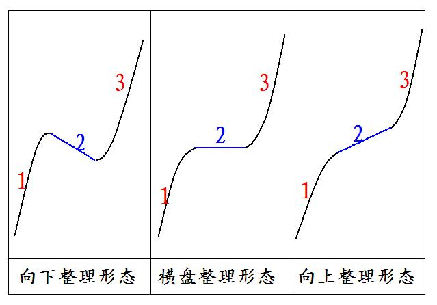

第278篇•教你炒股系列71:主升浪的形态（22）
谷为陵
前快后快型两波主升浪，是由两波暴涨型主升浪组成的。这类主升浪虽然也存在于长期成长股中，但绝大多数的这类主升浪是存在于业绩暴增股和题材股之中的，所以，我就重点阐述这两类股票的两波暴涨型主升浪形态问题。其中，在题材股中，由于题材股种类繁多，对于能够催生主升浪，特别是两波暴涨型主升浪的题材一定属于重大利好题材，它们大致可分为4类:资产暴增题材、热点概念题材、资产重组题材、资产注入题材。
（1）两波暴涨型主升浪基本形态
两波暴涨型主升浪基本形态，就是由1、2、3这三个浪组成的。其中，1浪就是第一波暴涨型主升浪，2浪是一个调整浪，3浪是第二波暴涨型主升浪。其中，
2浪调整可有向下调整、横盘（水平）调整、向上调整这三种形态，由此，两波暴涨型主升浪就有三种基本形态，如下图所示：

若仅从2浪的调整形态来看，上图中的三种形态的强度是按照向下调整、横盘调整、向上调整这个次序逐渐增强的。对于横盘调整可以这样解释，正常的调整应该是向下的，但由于股价走势太强，股价不肯下跌，就只好以横盘代替下跌。而走势最强的股票，其股价甚至是以一段斜向上的慢牛走势代替原本的向下调整或者横盘调整。
我在前面讲一波上涨型主升浪形态时说过，短期暴涨型主升浪大致有4种细分形态类型：
连续“一字板”型
连续“一字板+大阳线”涨停板型
连续“大阳线”涨停板型
大阳线型
从主升浪形态的强度来看，以上4种细分形态的强度是从上到下呈现递减趋势的。从理论上说，第二波短期暴涨型主升浪形态也应该有以上的4种细分形态类型。若将这两波各4种细分类型进行组合，那么，两波暴涨型主升浪应该可以组合出16种细分形态类型。但实际上，市场中实际出现的两波暴涨型主升浪的细分形态并没有那样多。从以往的经验看，在两波暴涨型主升浪中，第一波的强度要高于第二波的强度，或者说，第二波的强度一般不会比第一波的强度高。要注意的是，我在这里说的强度，是指主升浪的形态强度，而不是指主升浪的涨幅。比如，假若第一波主升浪是最强的“连续一字板涨停板”型主升浪，那么，第二波主升浪可以是以上4种细分主升浪形态中的任何一种，这并不违反“第二波的强度一般不会比第一波的强度高”这个原则，但第二波主升浪的涨幅却可以高于第一波主升浪，这也不违反原则。
既然如此，那主升浪的形态强度有何意义呢？其意义在于，当出现第一波暴涨型主升浪后，根据这一波主升浪的形态，我们就可以大致推测出第二波主升浪的形态，这对于抓住第二波主升浪是很有指导意义的。比如，当第一波主升浪是最强的“连续一字板涨停板”型主升浪，那么，第二波主升浪可以是以上4种细分主升浪形态中的任何一种，当然，从大概率来看，第二波主升浪再走出“连续一字板涨停板”型主升浪的可能性只占1/4。这实际上可以得出一个很重要的推论，那就是任何走出两波暴涨型主升浪的股票，都很难在第二波主升浪走出“连续一字板涨停板”的形态。这实际上已经告诉了我们一个抓第二波主升浪的方法。由于第二波主升浪一般不是“连续一字板涨停板”的形态，这也就意味着我们不会在第二波主升浪启动时，因股价突然以连续“一字板涨停板”的暴涨方式再次让我们彻底踏空，第二波主升浪的启动方式，从大概率来看，应该是以连续涨停板，或者是以连续大阳线方式启动的，这就能够给我们提供充裕的介入机会。我们平时盯盘干什么？就是在盯这样的突破机会。
现在还有一个问题，那就是为什么两波暴涨型主升浪，第二波的强度一般不会比第一波的强度高呢？这有何道理可讲呢？
我认为，这可以从催生主升浪的原动力进行解释。对于题材股来说，当上市公司公告了一个重大利好题材后，就引发了股价的两波暴涨型主升浪，两波主升浪的成因是相同的，是一个成因催生出了两波主升浪。也就是说，那个利好题材就是催生主升浪的原动力。原动力就是第一推动力，因这个第一推动力，股价的原有的运动模式被打破，形成新的运动模式，并具有新的运动惯性。可以说，因题材这个原动力的推动，股价就因此走出了第一波暴涨型主升浪，这轮主升浪是动力最充沛的，属于价值发现型，或者说是价值重估型，股价的上涨是很健康的，也是无可阻挡的，常常能够以最强势的
“连续一字板涨停板”的形态展现。但第二波主升浪出现时，股价并没有增加新的推动力，因此，第二波暴涨型主升浪本质上属于在原动力推动下的惯性上涨。由于股市不是一个真空的环境，其中充斥着阻挡股价上涨的介质——空方，因此，这个惯性上涨从能量上看应该是不断衰减的，它并非无可阻挡——当市场背景允许时，第二波主升浪会走出来；当市场背景不允许时，第二波主升浪往往会走不出来，出现所谓失败的第二波主升浪。
根据我的长期观察，我发现题材股的第二波主升浪基本上是泡沫型的，在绝大多数情况下，股价在完成第二波主升浪后，从长期来看，股价最终还会跌回第二波主升浪的起点位置。
这就引出了一个重要的问题，该怎样看待投资泡沫？是参与还是不参与这个泡沫化的第二波主升浪？
（未完待续）